主要零部件的功能
混合动力系统的主要零部件具有下列功能：
| 零部件 | 功能 | |
|---|---|---|
| 混合动力车辆控制 ECU | 对混合动力系统进行综合控制。
·
接收来自各种传感器和 ECU（ECM、MG ECU、蓄电池智能单元（蓄电池电压传感器）和防滑控制 ECU）的信息，并据此计算所需扭矩及输出功率。 混合动力车辆控制 ECU 将计算结果传输至 ECM、MG ECU 和防滑控制 ECU。 ·
监视 HV 蓄电池的 SOC。 ·
监视高压系统的绝缘故障。 ·
控制 DC-DC 转换器。 ·
控制逆变器水泵总成。 ·
控制蓄电池冷却鼓风机总成。 |
|
| 混合动力车辆传动桥总成 | 1 号电动机发电机 (MG1) | 由发动机驱动的 MG1 产生高压电，以驱动 MG2 并为 HV 蓄电池充电。 同时，它还可作为起动机以起动发动机。 |
| 2 号电动机发电机 (MG2) | ·
MG2 由 MG1 和 HV 蓄电池的电能驱动，产生用于驱动轮的驱动力。 ·
制动期间或未踩下加速踏板时，产生高压电为 HV 蓄电池再充电。 |
|
| 发电机解析器 (MG1) | 检测 MG1 的转子位置、转速和旋转方向。 | |
| 电动机解析器 (MG2) | 检测 MG2 的转子位置、转速和旋转方向。 | |
| 发电机温度传感器 (MG1) | 检测 MG1 的温度。 | |
| 电动机温度传感器 (MG2) | 检测 MG2 的温度。 | |
| ATF 温度传感器 | 检测 ATF 的温度。 | |
| 动力分配行星齿轮机构 | 合理分配发动机驱动力以驱动车辆及 MG1。 | |
| 电动机减速器装置 | 根据减速器的特点降低 MG2 的转速，以增大扭矩。 | |
| 带转换器的逆变器总成 | 逆变器 | 将增压转换器的直流转换为用于 MG1 和 MG2 的交流，反之亦然（从交流至直流）。 |
| 增压转换器 | 将 HV 蓄电池公称电压直流 244.8 V 增至最高电压直流 650 V，反之亦然（将直流 650 V 降至直流 244.8 V）。 | |
| DC-DC 转换器 | 将 HV 蓄电池公称电压直流 244.8 V 降至约直流 14 V，以为电气部件供电，并为辅助蓄电池充电。 | |
| MG ECU | 根据接收自混合动力车辆控制 ECU 的信号控制逆变器和增压转换器，从而将 MG1 和 MG2 作为发电机或电动机运行。 | |
| 带转换器的逆变器总成的温度传感器 | 检测带转换器的逆变器总成零件内的温度及 HV 冷却液温度。 | |
| 逆变器电流传感器 | 检测 MG1 和 MG2 的电流。 | |
| HV 蓄电池 | HV 蓄电池（蓄电池模块） | ·
根据车辆行驶状态，向 MG1 和 MG2 供电。 ·
根据 SOC 和车辆行驶状态，由 MG1 和 MG2 对其再充电。 |
| 维修塞把手 | 拆下维修塞把手进行车辆检查或保养时，切断 HV 蓄电池的高压电路。 | |
| 蓄电池智能单元（蓄电池电压传感器） | 监视 HV 蓄电池的状态（如电压、电流和温度），并将该信息传输至混合动力车辆控制 ECU。 | |
| HV 蓄电池温度传感器 | 检测 HV 蓄电池零件内的温度。 | |
| HV 蓄电池进气温度传感器 | 检测蓄电池冷却鼓风机总成的进气温度。 | |
| 混合动力蓄电池接线盒总成 | 系统主继电器 | 利用混合动力车辆控制 ECU 的信号，连接和断开 HV 蓄电池和带转换器的逆变器总成之间的高压电路。 |
| 蓄电池电流传感器 | 检测 HV 蓄电池的输入和输出电流。 | |
| 蓄电池冷却鼓风机总成 | 在混合动力车辆控制 ECU 的控制下工作以冷却 HV 蓄电池。 | |
| 互锁开关（维修塞把手/逆变器盖） | 确认已安装维修塞把手和逆变器盖。 | |
| 逆变器水泵总成 | 在混合动力车辆控制 ECU 的控制下运行以冷却带转换器的逆变器总成、MG1 和 MG2。 | |
| 带电动机的压缩机总成 | 由混合动力车辆控制 ECU 使用 HV 蓄电池的电力进行驱动，以通过空调放大器总成计算出的速度吸入、压缩并释放冷却剂，从而提供连续的空调操作，与发动机工作状态无关。 | |
| 电源电缆 | 连接 HV 蓄电池、带转换器的逆变器总成、混合动力车辆传动桥总成和带电动机的压缩机总成。 | |
| 换档杆位置传感器 | 将换档杆位置转化为电信号并将其发送至混合动力车辆控制 ECU。 | |
| 换档锁止控制单元总成 | 变速器控制开关 | ·
选择顺序换档模式时检测。 ·
选择顺序换档模式时检测换档杆的上/下操作。 |
| 加速踏板传感器总成 | 将加速踏板位置转化为电信号并将其发送至混合动力车辆控制 ECU。 | |
| 刹车灯开关总成 | 检测踩下制动踏板。 | |
| 电动驻车制动开关总成 | EV 行驶模式开关 | 驾驶员操作时，将 EV 行驶模式开关信号发送至混合动力车辆控制 ECU。 |
| NORMAL 模式开关 | 驾驶员操作时，将 NORMAL 模式开关信号发送至混合动力车辆控制 ECU。 | |
| SPORT 模式开关 | 驾驶员操作时，将 SPORT 模式开关信号发送至混合动力车辆控制 ECU。 | |
| ECO 模式开关 | 驾驶员操作时，将 ECO 模式开关信号发送至空调放大器总成。 | |
| 辅助蓄电池 | 为电气部件供电。 | |
| 蓄电池状态传感器总成 | 计算辅助蓄电池的电流、电压、温度、SOC（蓄电池充电百分比）、SHC（蓄电池消耗百分比）和 SOF（起动性能）。 | |
| ECM | ·
根据接收自混合动力车辆控制 ECU 的目标发动机转速和所需发动机驱动力对发动机进行控制。 ·
将各发动机工作状态信号传输至混合动力车辆控制 ECU。 |
|
| 防滑控制 ECU（带主缸的制动助力器总成） | ·
制动期间，其计算所需再生制动力并将其传输至混合动力车辆控制 ECU。 ·
TRC 或 VSC 运行期间，将请求传输至混合动力车辆控制 ECU 以限制驱动力。 |
|
| 空调放大器总成 | 将各种空调状态信号传输至混合动力车辆控制 ECU。 | |
| 空气囊 ECU 总成 | 碰撞过程中，将空气囊展开信号传输至混合动力车辆控制 ECU。 | |
| 换档杆位置指示灯 | 显示当前换档杆位置。 | |
| 组合仪表总成 | READY 指示灯 | 告知驾驶员车辆可以行驶。 |
| 主警告灯 | 根据多信息显示屏上显示的信息点亮或闪烁且蜂鸣器可能会鸣响。 | |
| 故障指示灯 (MIL) | 混合动力控制系统或发动机控制系统出现故障时点亮。 | |
| 多信息显示屏 | ·
显示换档杆位置。 ·
显示能量监视器。 ·
显示 EV 行驶指示灯。 ·
显示 EV 行驶模式指示灯。 ·
显示 SPORT 模式指示灯。 ·
显示 ECO 模式指示灯。 ·
显示自动滑行控制指示灯。 |
|
系统控制
控制列表
混合动力系统包括下列控制。
| 控制 | 概要 |
|---|---|
| 混合动力车辆控制 | ·
混合动力车辆控制 ECU 根据换档杆位置传感器、加速踏板开度和车速计算目标驱动力。 通过将 MG1、MG2 和发动机进行最佳组合，执行控制以产生目标驱动力。 ·
混合动力车辆控制 ECU 根据目标驱动力计算发动机驱动力，而目标驱动力是根据驾驶员的需要和车辆行驶状况计算的。 为产生此驱动力，混合动力车辆控制 ECU 将信号传输至 ECM。 ·
混合动力车辆控制 ECU 监视 HV 蓄电池的 SOC 及 HV 蓄电池、MG1 和 MG2 的温度，以对这些项目进行最佳控制。 |
| SOC 控制 | ·
混合动力车辆控制 ECU 通过估算 HV 蓄电池的充电和放电安培数计算 SOC。 ·
混合动力车辆控制 ECU 根据计算出的 SOC 持续执行充电/放电控制，以将 SOC 保持在目标范围内。 |
| 发动机控制 | ECM 接收混合动力车辆控制 ECU 发出的目标发动机转速和所需的发动机驱动力，并控制 ETCS-i、燃油喷射量、点火正时、VVT-i 和 EGR。 |
| MG1 和 MG2 主控制 | ·
由发动机驱动的 MG1 产生高压电，以驱动 MG2 并为 HV 蓄电池充电。 同时，它还可作为起动机以起动发动机。 ·
MG2 由 MG1 和 HV 蓄电池的电能驱动，产生用于驱动轮的驱动力。 ·
制动期间（再生制动协同控制）或未踩下加速踏板时（能量再生），MG2 产生高压电为 HV 蓄电池充电。 ·
选择空档 (N) 时，MG1 和 MG2 基本关闭。 为停止提供驱动力，需要停止驱动 MG1 和 MG2，因为 MG1 和 MG2 与驱动轮是机械连接的。 |
| 逆变器控制 | ·
根据混合动力车辆控制 ECU 通过 MG ECU 提供的信号，逆变器将 HV 蓄电池的直流转换为用于 MG1 和 MG2 的交流，反之亦然。 此外，逆变器用于将 MG1 产生的电能传送至 MG2。 ·
如果混合动力车辆控制 ECU 通过 MG ECU 接收到来自逆变器的过热、过电流或电压异常信号，则其切断逆变器。 |
| 增压转换器控制 | ·
根据混合动力车辆控制 ECU 通过 MG ECU 提供的信号，增压转换器将 HV 蓄电池的公称电压直流 244.8 V 升至最高电压直流 650 V。 ·
逆变器将 MG1 或 MG2 产生的交流转换为直流。 根据混合动力车辆控制 ECU 通过 MG ECU 提供的信号，增压转换器将产生的电压从直流 650 V（最高电压）降至约直流 244.8 V。 |
| DC-DC 转换器控制 | DC-DC 转换器将 HV 蓄电池的公称电压直流 244.8 V 降至约直流 14 V，从而为电气部件供电，并为辅助蓄电池充电。 |
| 系统主继电器控制 | 为确保能够可靠地连接和断开高压电路，混合动力车辆控制 ECU 控制 3 个系统主继电器以连接和断开 HV 蓄电池的高压电路。 混合动力车辆控制 ECU 还利用 3 个系统主继电器的工作正时监视继电器触点的工作情况。 |
| 带转换器的逆变器总成的冷却系统控制 | 为了冷却带转换器的逆变器总成、MG1 和 MG2，混合动力车辆控制 ECU 根据来自带转换器的逆变器总成温度传感器、MG1 温度传感器和 MG2 温度传感器的信号调节逆变器水泵总成。 |
| HV 蓄电池冷却系统控制 | 为了使 HV 蓄电池的温度保持在最佳水平，混合动力车辆控制 ECU 根据来自 HV 蓄电池温度传感器和 HV 蓄电池进气温度传感器的信号调节蓄电池冷却鼓风机总成。 |
| 再生制动协同控制 | 制动期间，防滑控制 ECU 计算所需的再生制动力，并将其传输至混合动力车辆控制 ECU。 混合动力车辆控制 ECU 接收到此信号后，将实际再生制动控制值传输至防滑控制 ECU。 根据此结果，防滑控制 ECU 计算并执行所需液压制动力。 |
| TRC/VSC 协同控制 | TRC 或 VSC 工作时，防滑控制 ECU 将请求传输至混合动力车辆控制 ECU 以限制驱动力。 混合动力车辆控制 ECU 根据当前行驶状态控制发动机和 MG2 以限制驱动力。 （有关详情，请参考制动控制系统。） |
| 碰撞时的控制 | 碰撞期间，如果混合动力车辆控制 ECU 接收到来自空气囊 ECU 总成的空气囊展开信号，将断开系统主继电器以切断 HV 蓄电池的高压。 |
| 动态雷达巡航控制 | 接收到来自行驶辅助 ECU 总成的驱动力请求信号后，混合动力车辆控制 ECU 优化发动机、MG2 的驱动力以便达到目标车速。 （有关详情，请参考动态雷达巡航控制系统。） |
| 换档控制 | 混合动力车辆控制 ECU 根据换档杆位置传感器、变速器控制开关提供的信号检测驾驶员所需档位（P、R、N、D 或 S）。 根据这些输入和车辆工作状态，混合动力车辆控制 ECU 控制 MG1、MG2 和发动机以符合所选档位。 |
| EV 行驶模式控制 | 驾驶员操作 EV 行驶模式开关（电动驻车制动开关总成）时，如果满足操作条件，则混合动力车辆控制 ECU 将仅使用 MG2 来驱动车辆。 |
| SPORT 模式控制 | 驾驶员操作 SPORT 模式开关（电动驻车制动开关总成）时，混合动力车辆控制 ECU 调节加速踏板操作的响应以优化加速度。 |
| 环保模式控制 | 驾驶员操作 ECO 模式开关（电动驻车制动开关总成）时，混合动力车辆控制 ECU 调节加速踏板操作的响应以支持环保驾驶。 |
| 制动优先系统 | 同时踩下加速踏板和制动踏板时，混合动力系统输出受到限制。 （有关激活条件和检查方法，请参考修理手册） |
| 发动机停机系统控制 | 在试图使用无效钥匙启动混合动力控制系统时禁止燃油输送、点火和启动混合动力控制系统。 |
| 行车起步辅助控制 | 如果加速时检测到异常换档（R 至 D/S、D/S 至 R、N 至 R、P 至 D/S、P 至 R），则在多信息显示屏上显示警告并减小混合动力系统输出以限制加速度，从而避免碰撞。 |
| 自动滑行控制 | 选择 ECO 模式并且松开加速踏板时优化减速扭矩。 |
混合动力系统启动（READY-on 状态）
踩下制动踏板时按下电源开关（按钮起动开关），激活混合动力系统。 此时，READY 指示灯一直闪烁直至完成系统检查。 READY 指示灯点亮时，混合动力系统启动且车辆可以行驶。
即使驾驶员将电源开关（按钮起动开关）置于 ON (READY) 位置，混合动力车辆控制 ECU 有时也无法起动发动机。 发动机仅在如发动机冷却液温度、SOC、HV 蓄电池温度和电气负载需要起动发动机时等条件下起动。
行驶后，如果驾驶员停止车辆并将换档杆置于 P，则混合动力车辆控制 ECU 将允许发动机继续运转。 发动机将在 SOC、HV 蓄电池温度和电气负载状态达到规定值后停止。
驾驶过程中不得不停止混合动力系统时，按住电源开关（按钮起动开关）约 2 秒或更长时间或连续按下电源开关（按钮起动开关）3 次或更多次可强行停止该系统。 此时，电源切换至 ON (ACC)。
EV 行驶模式
根据混合动力控制系统状况以及行驶情况，可能无法将行驶模式切换至 EV 模式，并在多信息显示屏上显示警告信息。
下列情况下，无法将行驶模式切换至 EV 模式：
混合动力控制系统极热。
在极热环境中驻车后，高速驾驶车辆或使车辆在上坡路上行驶等。
混合动力控制系统极冷。
将车辆长时间停驻在极寒冷环境（约 0°C 或更低）中后。
发动机暖机。
HV 蓄电池的 SOC（充电状态）低。
车辆以高于规定值的速度行驶。
车速约为 30 km/h 或更高。
完全踩下加速踏板或车辆正在爬坡。
除霜器打开。
存储 DTC。
EV 行驶模式可降低车辆噪音，如进入或离开车库时，同时减少车库内产生的废气量。 驾驶员操作 EV 行驶模式开关时，如果满足操作条件，则混合动力车辆控制 ECU 将仅使用 MG2 来驱动车辆。
满足所有工作条件时，按下 EV 行驶模式开关可使车辆进入 EV 行驶模式，且 EV 行驶模式指示灯将点亮。 如果未满足任一工作条件而按下 EV 行驶模式开关，EV 行驶模式指示灯闪烁 3 次并且蜂鸣器鸣响以告知驾驶员 EV 行驶模式开关操作被拒绝，无法进入 EV 行驶模式。
车辆在 EV 行驶模式下行驶时，如果不再满足工作条件，EV 行驶模式指示灯将闪烁 3 次且蜂鸣器鸣响以告知驾驶员 EV 行驶模式即将取消。
SPORT 模式和 ECO 模式
选择 SPORT 模式时可通过使用非线性加速踏板开度，实现强劲的加速效果。
在 ECO 模式下，混合动力车辆控制 ECU 通过缓慢产生驱动力（与加速踏板操作相比）来优化燃油经济性和行驶性能。 同时，通过优化空调性能来支持环保驾驶。
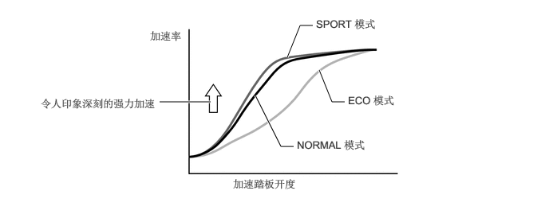
混合动力车辆控制
混合动力车辆控制 ECU 利用来自加速踏板传感器总成的信号检测加速踏板踩踏程度，并检测换档杆位置传感器的换档杆位置信号。 混合动力车辆控制 ECU 通过 MG ECU 接收来自 MG1 和 MG2 解析器的转速信号。 混合动力车辆控制 ECU 根据此信息确定车辆行驶状态，并对 MG1、MG2 和发动机的驱动力进行优化控制。 此外，混合动力车辆控制 ECU 对 MG1、MG2 和发动机的输出功率和扭矩进行最佳控制，以实现更低的燃油消耗和更清洁的废气排放。
混合动力车辆控制 ECU 根据计算的目标驱动力并结合 HV 蓄电池的 SOC 和温度来计算发动机驱动力。 从目标驱动力中减去发动机驱动力所得的值即为 MG2 驱动力。
ECM 根据接收自混合动力车辆控制 ECU 的目标发动机转速和所需发动机驱动力对发动机进行控制。 此外，混合动力车辆控制 ECU 合理运行 MG1 和 MG2 以提供所需的 MG1 发电力和所需的 MG2 驱动力。
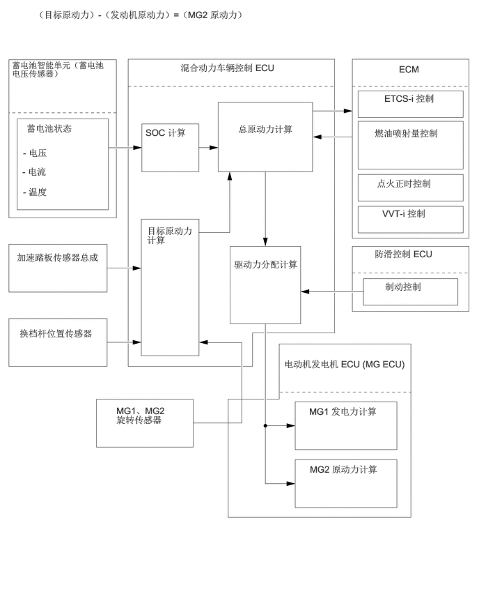
SOC 控制
混合动力车辆控制 ECU 根据蓄电池电流传感器检测的充电/放电安培数计算 HV 蓄电池的 SOC。 混合动力车辆控制 ECU 根据计算出的 SOC 持续执行充电/放电控制，以将 SOC 保持在目标范围内。
车辆行驶过程中，HV 蓄电池经过反复的充电/放电循环，因为其在加速过程中由 MG2 放电，在减速过程中由再生制动充电。
SOC 过低时，混合动力车辆控制 ECU 提高发动机的输出功率来操作 MG1 以对 HV 蓄电池充电。
蓄电池智能单元（蓄电池电压传感器）将 HV 蓄电池的相关信号（电压、电流和温度）转换为数字信号，并通过串行通信将其传输至混合动力车辆控制 ECU。 这些信号用于确定混合动力车辆控制 ECU 计算的 SOC。
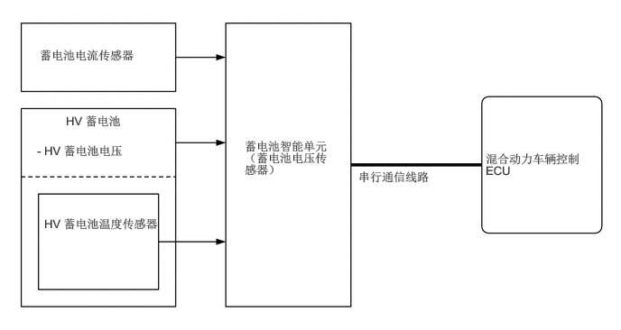
发动机控制
ECM 接收混合动力车辆控制 ECU 发出的目标发动机转速和所需的发动机驱动力，并控制 ETCS-i、燃油喷射量、点火正时、VVT-i 和 EGR。
ECM 将发动机工作状态传输至混合动力车辆控制 ECU。
接收到混合动力车辆控制 ECU 根据基本混合动力车辆控制发出的发动机停止信号后，ECM 停止发动机。
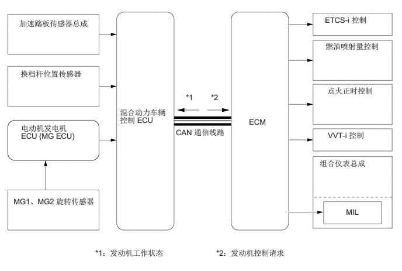
MG1 和 MG2 主控制
由发动机驱动的 MG1 产生高压电，以驱动 MG2 并为 HV 蓄电池充电。 同时，它还可作为起动机以起动发动机。
MG2 由 MG1 和 HV 蓄电池的电能驱动，产生用于驱动轮的驱动力。
制动期间（再生制动协同控制）或未踩下加速踏板时（能量再生），MG2 产生高压电为 HV 蓄电池充电。
选择空档 (N) 时，MG1 和 MG2 基本关闭。 为停止提供驱动力，需要停止驱动 MG1 和 MG2，因为 MG1 和 MG2 与驱动轮是机械连接的。
MG ECU 根据接收自混合动力车辆控制 ECU 的信号控制智能动力模块 (IPM) 内的绝缘栅双极晶体管 (IGBT)。 IGBT 用于切换各电动机发电机的 U、V 和 W 相。 根据电动机发电机作为电动机或发电机进行的操作，MG1 6 个 IGBT 和 MG2 12 个 IGBT 在 ON 和 OFF 间切换，控制各电动机发电机。
下图描述了电动机发电机用作电动机时的基本控制。 IPM 内的 IGBT 在 ON 和 OFF 间切换，为电动机发电机提供三相交流。 为了产生由混合动力车辆控制 ECU 计算的所需电动机发电机的驱动力，MG ECU 使 IGBT 在 ON 和 OFF 间切换以控制电动机发电机的转速。
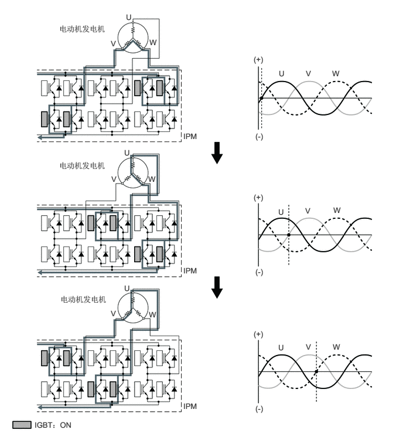
下图描述了电动机发电机用作发电机时的基本控制。 由车轮驱动的电动机发电机的 3 个相依次产生的电流用于对 HV 蓄电池充电或驱动另一电动机发电机。
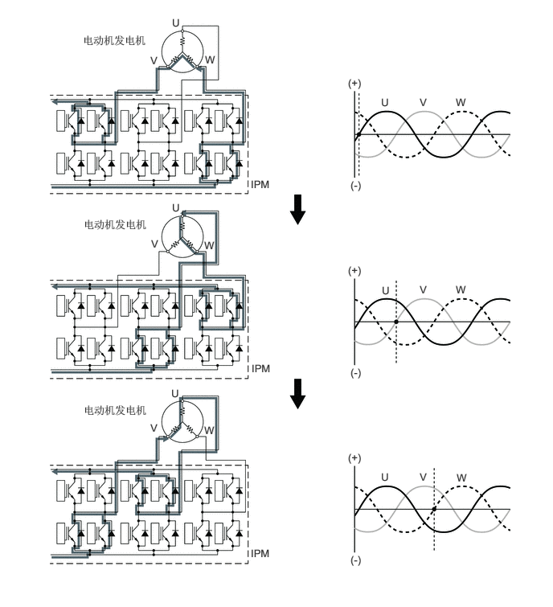
逆变器控制
逆变器将来自 HV 蓄电池的直流转换为交流提供给 MG1 和 MG2，反之亦然。 此外，逆变器将 MG1 产生的电能提供给 MG2。 然而，MG1 产生的电能在逆变器内转换为直流后，再由逆变器转换回交流供 MG2 使用。 这是必要的，因为 MG1 输出的交流频率不适合控制 MG2。
MG ECU 根据接收自混合动力车辆控制 ECU 的信号控制 IPM 以切换 MG1 和 MG2 的三相交流。
混合动力车辆控制 ECU 接收到来自 MG ECU 的过热、过电流或电压故障信号时，其将切断控制信号传输至 MG ECU 以断开 IPM。
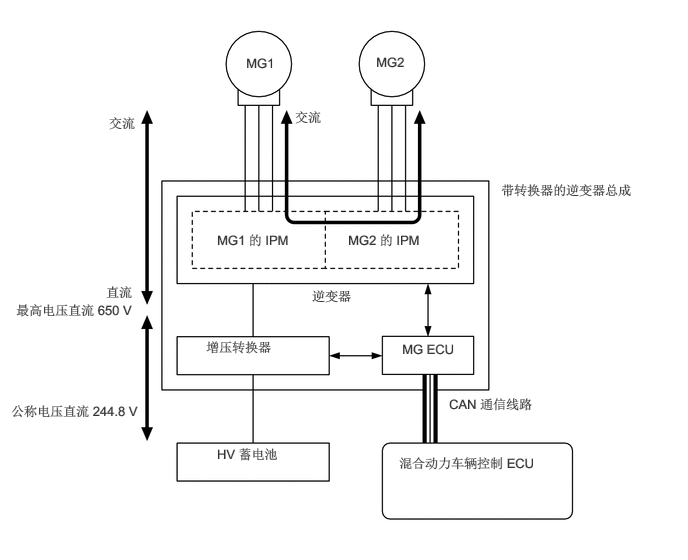
增压转换器控制
根据混合动力车辆控制 ECU 通过 MG ECU 提供的信号，增压转换器将 HV 蓄电池的公称电压直流 244.8 V 升至最高电压直流 650 V。
逆变器将 MG1 或 MG2 产生的交流转换为直流。 根据混合动力车辆控制 ECU 通过 MG ECU 提供的信号，增压转换器将产生的电压从直流 650 V（最高电压）降至约直流 244.8 V。
增压转换器包括带内置 IGBT（执行切换控制）的增压 IPM、存储电能并产生电驱动力的电抗器和将增压的高压电进行充电和放电的电容器。
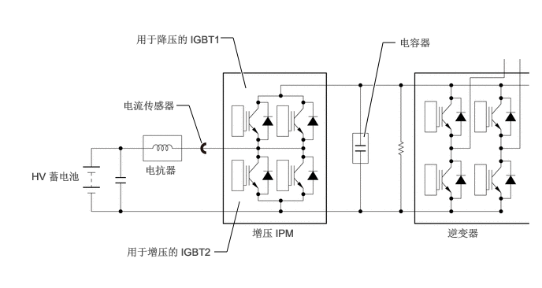
增压转换器增压的流程如下所述。
| 步骤 | 概要 |
|---|---|
| 1 | IGBT2 接通使 HV 蓄电池电压（直流 244.8 V 的公称电压）为电抗器充电， 从而使电抗器存储了电能。 |
| 2 | IGBT2 断开使电抗器产生电驱动力（电流持续从电抗器流出）。 该电驱动力使电压升至最高电压直流 650 V。在电抗器产生的电驱动力的作用下，电抗器中流出的电流以增压后的电压流入逆变器和电容器。 |
| 3 | IGBT2 再次接通，使 HV 蓄电池的电压为电抗器充电。 与此同时，通过释放电容器中存储的电能（最高电压为直流 650 V），继续向逆变器提供电能。 |
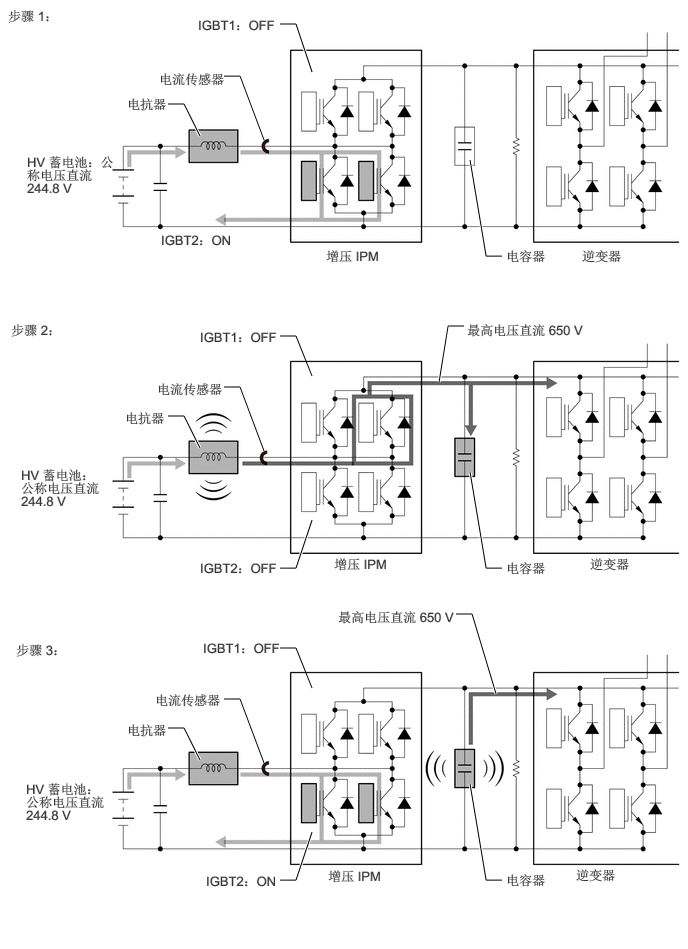
MG1 或 MG2 产生的用于为 HV 蓄电池充电的交流被逆变器转换为直流（最高电压为直流 650 V）。 然后，使用增压转换器将电压降至约直流 244.8 V。这个操作是利用占空比控制使 IGBT1 在 ON 和 OFF 之间切换，间歇性地中断逆变器对电抗器的供电完成的。
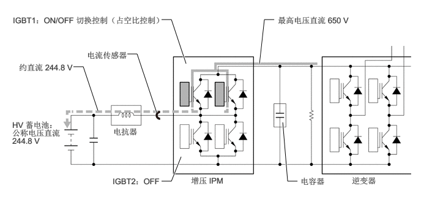
DC-DC 转换器控制
DC-DC 转换器将 HV 蓄电池的公称电压直流 244.8 V 降至约直流 14 V，从而为电气部件供电，并为辅助蓄电池充电。
为调节 DC-DC 转换器的输出电压，混合动力车辆控制 ECU 根据蓄电池状态传感器总成信号将输出电压请求信号传输至 DC-DC 转换器。
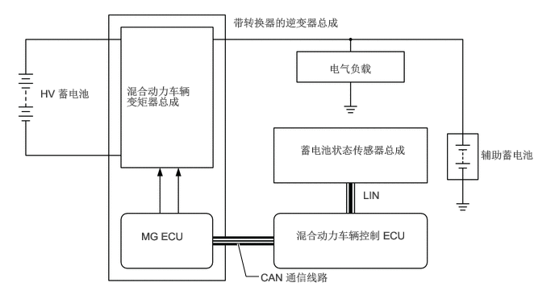
系统主继电器控制
混合动力车辆控制 ECU 控制系统主继电器以连接和断开 HV 蓄电池的高压电路。 混合动力车辆控制 ECU 还利用系统主继电器的工作正时监视继电器触点的工作情况。
共采用 3 个继电器以确保正常工作，1 个用于正极侧 (SMRB)，2 个用于负极侧（SMRP、SMRG）。
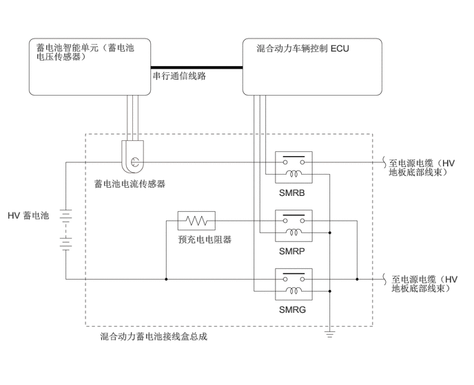
混合动力系统切换至 READY-on 状态时，混合动力车辆控制 ECU 依次接通 SMRB 和 SMRP，并通过预充电电阻器施加电流。 随后，接通 SMRG 并绕过预充电电阻器施加电流。 然后，断开 SMRP。 由于受控电流以这种方式首先经过预充电电阻器，从而保护了电路中的触点，避免其因涌流而受损。
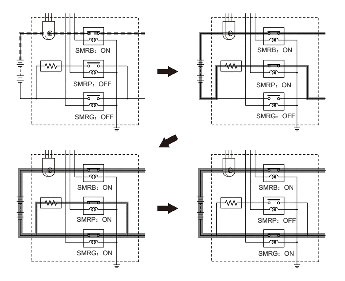
混合动力系统切换至 READY-on 状态以外的状态时，混合动力车辆控制 ECU 首先断开 SMRG。 接下来，在确定 SMRG 是否正常工作后，断开 SMRB。 然后，在确定 SMRB 是否正常工作后，接通 SMRP，然后断开。 这样，混合动力车辆控制 ECU 便可确认相关继电器已正确断开。
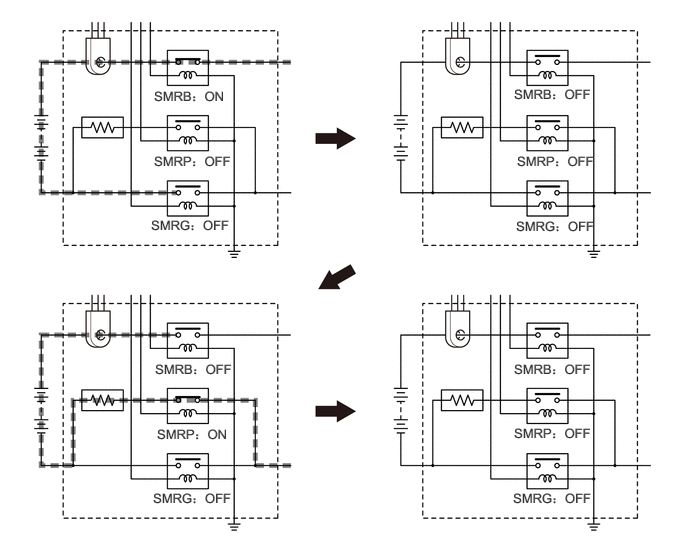
带转换器的逆变器总成的冷却系统控制
混合动力车辆控制 ECU 接收来自带转换器的逆变器总成温度传感器、MG1 温度传感器和 MG2 温度传感器的信号。 然后，混合动力车辆控制 ECU 使用占空比控制以 5 个级别驱动逆变器水泵总成，以冷却带转换器的逆变器总成、MG1 和 MG2。
HV 冷却液温度超过特定值后，混合动力车辆控制 ECU 将散热器风扇驱动请求信号传输至 ECM。 作为对此信号的响应，ECM 驱动散热器风扇以抑制 HV 冷却液温度升高，从而确保冷却带转换器的逆变器总成、MG1 和 MG2。
MG ECU 将温度传感器信号转换成数字信号，并通过串行通信将其传输至混合动力车辆控制 ECU。
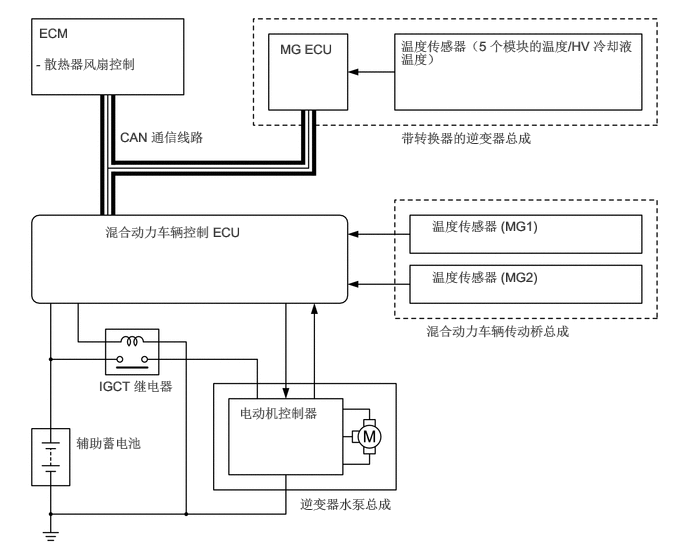
HV 蓄电池冷却系统控制
混合动力车辆控制 ECU 接收来自 HV 蓄电池温度传感器和 HV 蓄电池进气温度传感器的信号。 然后，混合动力车辆控制 ECU 使用占空比控制对蓄电池冷却鼓风机总成进行无级驱动，以使 HV 蓄电池的温度保持在规定范围内。
蓄电池智能单元（蓄电池电压传感器）将 HV 蓄电池的相关信号（电压、电流和温度）转换为数字信号，并通过串行通信将其传输至混合动力车辆控制 ECU。 同时，蓄电池智能单元（蓄电池电压传感器）检测执行冷却系统控制所需的鼓风机转速反馈频率，并将其传输至混合动力车辆控制 ECU。
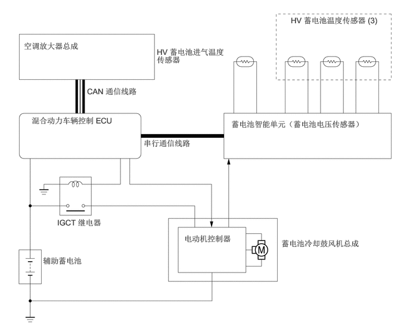
再生制动协同控制
驾驶员踩下制动踏板时，防滑控制 ECU 根据制动调节器压力和制动踏板行程计算所需总制动力。
计算所需总制动力后，防滑控制 ECU 将再生制动力请求发送至混合动力车辆控制 ECU。 混合动力车辆控制 ECU 回复实际再生制动量（再生制动控制值）。
混合动力车辆控制 ECU 使用 MG2 产生负扭矩（减速力），从而执行再生制动。
防滑控制 ECU 控制制动执行器电磁阀并产生轮缸压力。 产生的压力是从所需总制动力中减去实际再生制动控制值后剩余的值。
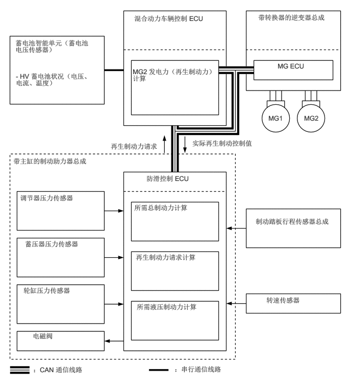
行车起步辅助控制
检测到异常的驾驶员加速踏板操作和换档操作时，此系统限制混合动力系统输出功率并告知驾驶员。
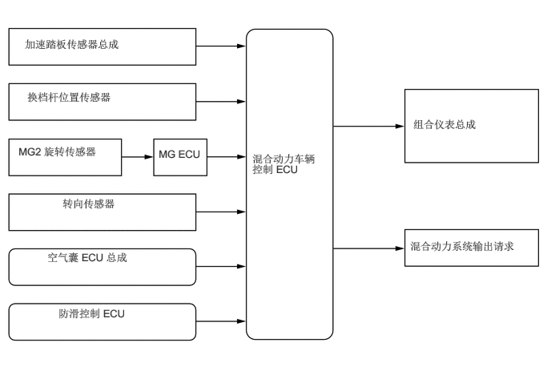
系统工作时，即使驾驶员踩住加速踏板，上坡时混合动力系统输出功率也可能增大，下坡时发动机输出功率也可能减小。 在斜坡上时，系统可将车速和加速度限制为低于预定限值，这并非故障。
操作 VSC OFF 开关以关闭 TRC 时，系统不工作。
倒车操作期间的控制
倒车时，对过度踩下加速踏板做出响应。
根据道路坡度和转向角校正混合动力系统输出功率。
| 控制起动条件（满足所有条件时控制开始。） | ·
档位为 R。 ·
踩下加速踏板过度。 |
| 控制操作 | 限制混合动力系统输出功率，以使车速和加速度等于或低于特定值。 |
| 控制停止条件 | ·
档位不为 R。 ·
完全松开加速踏板。 |
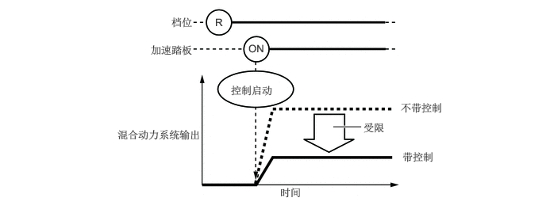
手动换档操作期间的控制
对踩下加速踏板时进行的换档操作做出响应。
根据手动换档操作模式，改变限制量。
根据道路坡度和转向角校正混合动力系统输出功率。
| 控制起动条件（满足所有条件时控制开始。）* | ·
档位从 P 切换至 D/S，或从 P 切换至 R。 ·
加速踏板开度约为 1/5 或更大。 |
| 控制操作 | 限制混合动力系统输出功率，以使车速和加速度等于或低于特定值。 |
| 控制停止条件 | ·
档位位于 P 或 N。 ·
完全松开加速踏板。 |
*：在选择驻车档 (P) 和踩下加速踏板的情况下尝试选择非驻车档 (P) 时，由于档位无法从驻车档 (P) 换出，所以行车起步辅助控制不工作。
根据情况，可能无法切换换档杆位置。
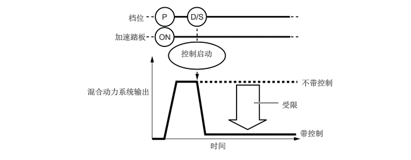
| 控制起动条件（满足所有条件时控制开始。） | ·
档位从 R 切换至 D/S、从 D/S 切换至 R，或从 N 切换至 R。 ·
加速踏板开度约为 1/5 或更大。 |
| 控制操作 | 限制混合动力系统输出功率，以使车速和加速度等于或低于特定值。 |
| 控制停止条件 | ·
档位位于 P 或 N。 ·
完全松开加速踏板。 |
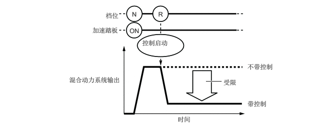
以上两种情况下的混合动力系统输出功率限制水平不同。
手动换档期间进行控制时（从控制开始到松开加速踏板），此系统通过多信息显示屏将该控制告知驾驶员。
自动滑行控制
选择 ECO 模式并且松开加速踏板时优化减速扭矩。
制动期间或车辆下坡时，使用标准减速扭矩。
自动滑行控制运行时：
松开加速踏板时减小减速扭矩。
调节减速扭矩时限制变化率以防止急剧改变。
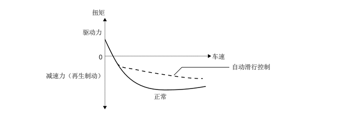
| 行驶模式 | ECO 模式 |
| 换档杆位置 | D 位置 |
| 车速 | 约 15 km/h 或更高 |
| 制动踏板操作 | OFF |
| 加速踏板操作 | 加速踏板开度为规定值或更小 |
| 加速判断 | 速度未增加（根据加速度和车轮转速传感器进行判断） |
| 其他控制 | ·
动态雷达巡航控制系统不工作 ·
智能侦测声纳系统不工作 ·
碰撞预测系统不工作 ·
未按下 VSC OFF 开关时 ·
TRC 或 VSC 不工作 |
| 传感器 | 加速度和车轮转速传感器未发生故障。 |
禁用自动滑行控制时：
禁用自动滑行控制时，松开加速踏板时使用标准减速扭矩。
| 行驶模式 | ECO 模式以外的模式 |
| 换档杆位置 | D 位置以外的位置 |
| 车速 | 约 15 km/h 或更低 |
| 制动踏板操作 | 踩下（持续禁用直至踩下加速踏板） |
| 加速判断 | 下坡行驶等时检测到加速 |
显示屏：
仅在自动滑行控制工作时，在组合仪表总成的多信息显示屏上显示 AGC 图标，通知减速扭矩小于平常。
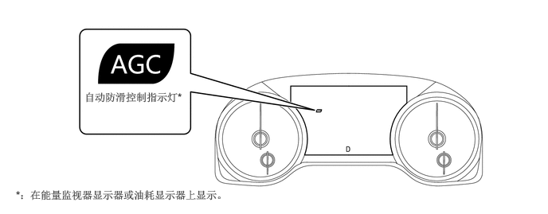
功能
行驶模式选择
按下行驶模式开关可将行驶模式切换至相应的“ECO”、“Normal”或“Sport”模式。
如果在选择“Normal”或“ECO”模式时将电源开关（按钮起动开关）置于 OFF 位置，则将电源开关（按钮起动开关）置于 ON 位置时将保持最近的模式。 但是，如果将电源开关（按钮起动开关）置于 OFF 位置时选择“SPORT”模式，则将电源开关（按钮起动开关）置于 ON 位置时行驶模式将切换至“Normal”模式。
诊断
混合动力车辆控制 ECU 检测到混合动力系统出现故障时，将执行诊断并存储与故障相关的信息。 混合动力车辆控制 ECU 点亮或闪烁故障指示灯 (MIL)，以告知驾驶员出现故障。 同时将诊断故障码 (DTC) 存入存储器中。
常规 DTC 附带 3 位信息代码（INF 代码），作为 5 位主要代码的子集。 这样可使故障排除程序进一步缩小可能故障范围以确定故障。
将 Global TechStream (GTS) 连接到 DLC3 后可读取 DTC。 有关详情，请参考修理手册。